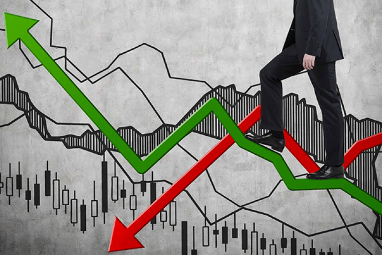
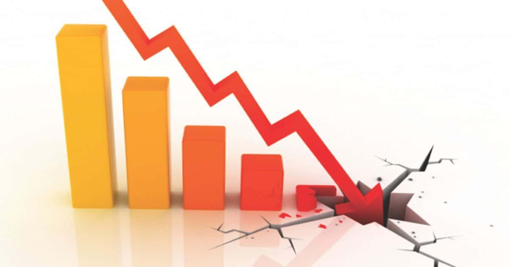

O que é volatilidade?
Chama-se de volatilidade a
A volatilidade ocorre por muitos motivos, como mudanças nas preferências das pessoas, ciclos de pânico e otimismo, por exemplo. Entender esse conceito é importante para poder criar cenários para diferentes ativos e prever tendências, períodos de alta ou de baixa e assim poder se previnir. Esse conceito é super importante para os investidores, uma vez que "dita" qual ação esse investidor de tomar.
Como funciona a volatilidade?
A volatilidade é calculada a partir do desvio padrão de um ativo, desvio esse estimado pelas altas e baixas desse ativo, levando em consideração a sua rentabilidade diária, estimada em um determinado período. Ou seja, são usadas as variações altas e baixas desse ativo, e seguindo essa variação calcula-se uma porcentagem, que corresponderá a sua volatilidade.

Um determinado ativo, mantém o mesmo rendimento durante um período de uma semana; assim, esse ativo apresentou no final dessa semana uma volatilidade baixa, logo sendo pouco volátil. Porém, na semana seguinte esse mesmo ativo apresentou um crescimento espetacular no início da semana, porém no final dessa mesma semana, apresentou um decrescimento absurdo; assim, esse ativo apresentou uma variação de seu rendimento, logo, teve uma variação muito maior, sendo assim volátil.
É importante ressaltar, que essas variações não refletem, de fato, o valor final do rendimento desse ativo. Um ativo, ao final de um determinado período, pode entregar um rendimento maior do que um ativo com uma variação mais estável. Ser volátil significa que o rendimento de um investimento tem mais chances de variar, tanto para bem como para mal.
Qual a diferença entre volatilidade e risco?
Chama-se de volatilidade a

A volatilidade ocorre por muitos motivos, como mudanças nas preferências das pessoas, ciclos de pânico e otimismo, por exemplo. Entender esse conceito é importante para poder criar cenários para diferentes ativos e prever tendências, períodos de alta ou de baixa e assim poder se previnir. Esse conceito é super importante para os investidores, uma vez que "dita" qual ação esse investidor de tomar.
Tipos de volatilidade
- Volatilidade Histórica
- Como o seu nome sugere, ela leva em conta as variações passadas de um ativo em determinado período, também conhecida como padrão de desvio anual de um de um determinado ativo. Geralmente, se usa essa medida como uma estimativa na hora de de tentar calcular as possíveis variações futuras.
- Volatilidade Real
- A volatilidade real ou futura, é a representação do preço de ativos negociados no mercado futuro. Simplificando, significa negociar hoje, algum ativo que será vendido só daqui a algum tempo.
- Volatilidade Implícita
- É aquela realizada no momento atual e consiste em uma estimativa de preço futuro do ativo em questão. Calcula-se a partir da variação histórica daquele ativo e dos preços negociados atualmente na bolsa.
Existem difernetes maneiras de calcular o quão volátil é um ativo e cada uma delas tem um papel e finalidade
específica. Os tipos principais e mais conhecidos são:
Por que a volatilidade importa?
Ativos digitais existem a pouco tempo, historicamente falando. Assim, o valor de cada cripto depende do capacidade tecnológica e das oportunidades de inovação que esta cripto possui. Por outro lado, o seu preço é definido de acordo com "trasição marginal", aquela onde uma parte vende pelo mínino preço que aceita, enquanto a outra compra pelo máximo que esta disposta.

Quando uma movimentação fora do comum acontece nos criptoativos, seja uma venda de maior volume (derrubando o preço), seja uma compra (subindo o preço), a falta de lastro e a familiaridade cobram seu preço, aumentando esse movimento. Assim, o latro e a familiaridade ajudariam a reduzir a volatidade, ajudando a estabelecer míninos e máximos para os preços.
Conclusão sobre a volatilidade e as Criptomoedas
A alta volatilidade não necessariamente influencia na decisão de comprar ou não um criptoativo -pode até ajudar, quando aproveita-se as quedas de preço, mas sempre deve ser levada em consideração perante nossa necessiade de liquidez. Na prática, as rápidas mudanças podem custar muito caro caso tenhamos que liquidar o investimento em momento inoportuno.
Por isso, a recomendação para quem pretende investir em criptoativos segue a mesma: crie uma reserva de emergência, conheça o seu perfil de investidor e, se as criptos fizerem sentido dentro do seu perfil, diversifique o risco. Diversificar o risco significa investir em diversos ativos — de preferência, descorrelacionados. Assim, você consegue reduzir o risco da carteira, sem necessariamente reduzir o potencial de retorno.